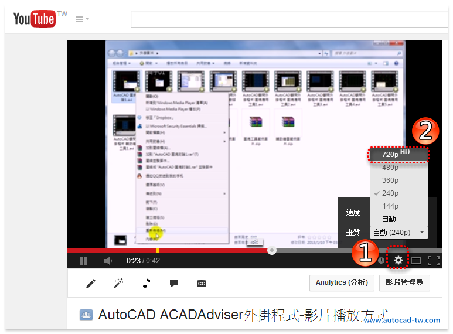
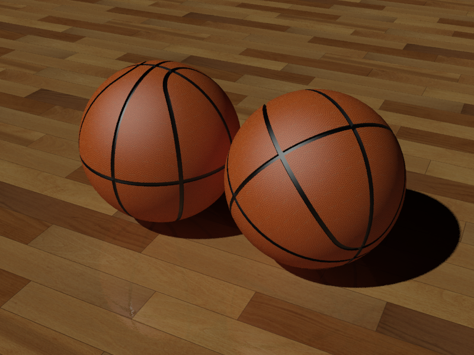

最近NBA總冠軍賽，真是好緊張，大家覺得誰會贏啊～
還有亞洲籃球神童林書豪也回台灣囉！
趁這次機會來製作練習用AutoCAD 3D建模，這個籃球範例也是一個很好的練習！
一樣強化您「UCS工作面」運用，並且搭配使用「圖層及物件隔離」方式建構，可以從中學習到很多技巧喔～

影片教學步驟我有放慢速度，關鍵需要先畫出籃球上的紋路，然後再來實體化！

方法有很多種，論壇教學供大家參考，有其他方式也歡迎您的熱情分享～
請記得說明以下事項(參與練習的朋友將獲得 威望值+6):
最具特色或是創意的會員朋友可以獲得積分1喔！
1.3d成品圖片
2.建模所用到的指令(大概就好)
3.使用的AutoCAD版本
4.建模所需時間
5.您的意見補充
※播放時影片畫質可以選擇720P播放較清楚

2016.06.20新增彩現(渲染)照片及影片



想要練習的朋友可以自行搜尋材質，或是用論壇提供的籃球材質下載！